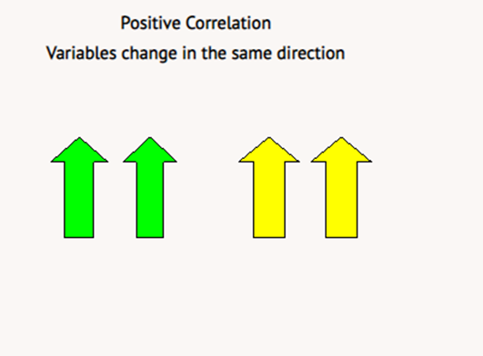
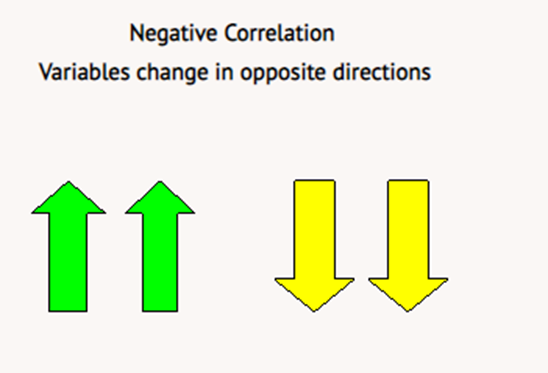
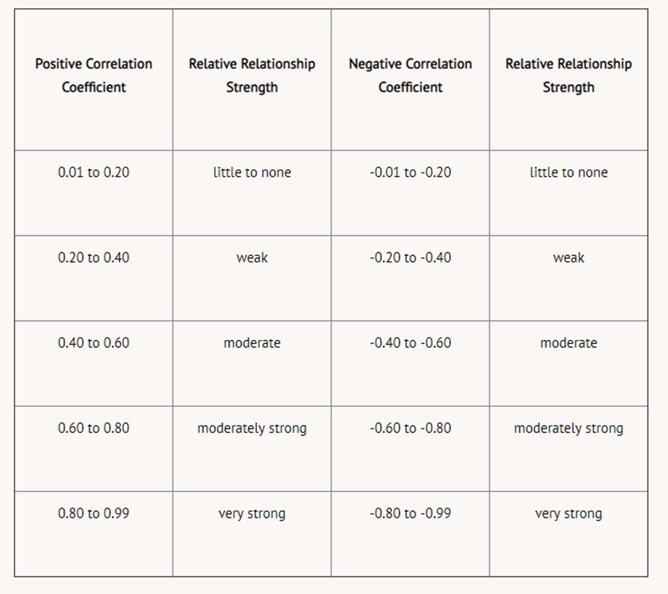
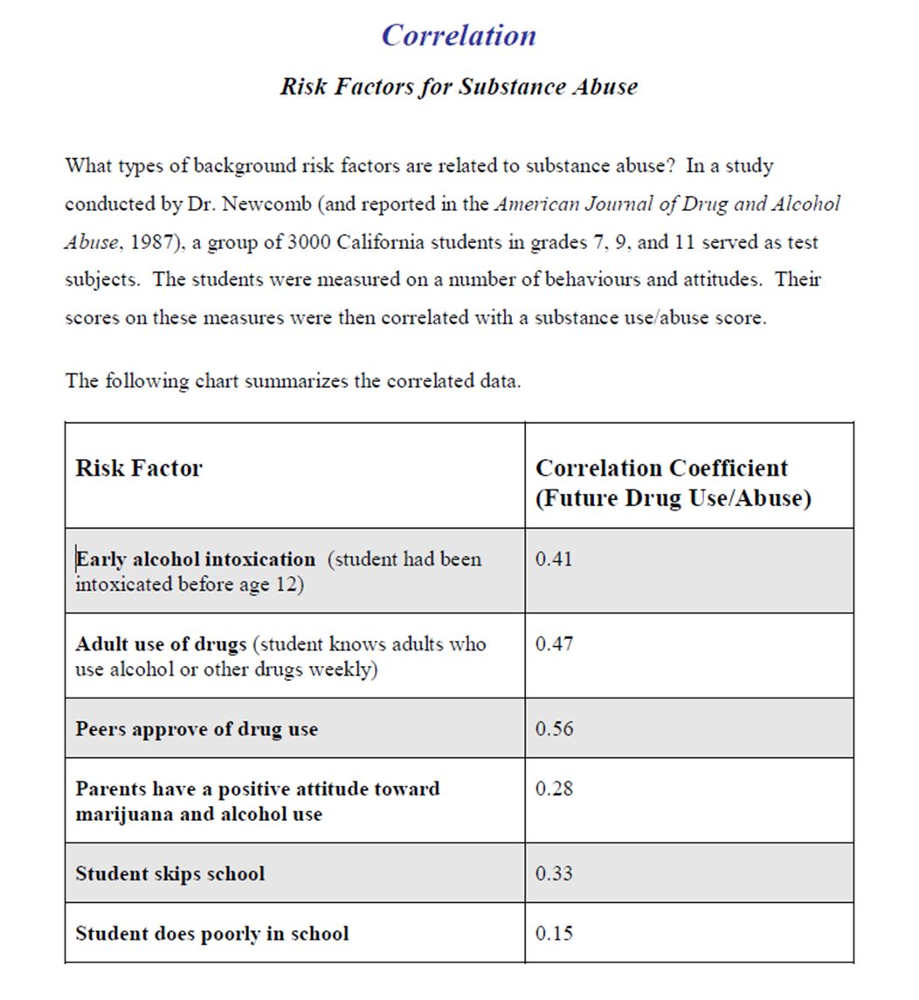
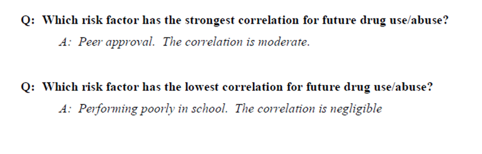

Correlational research is very similar to experimental research. Correlational research, however, is classified as a non-experimental descriptive method because variables are not directly manipulated. In fact, correlational research is often considered a statistical tool because it is very much a mathematical technique for summarizing data.
Correlational studies are designed to determine the degree and direction of a relationship between two or more variables or measures of behaviour. A correlation coefficient (r) is a numerical index of that relationship. Because of this, the variables have to be expressed as numbers. Numerical data is often called quantitative. Note, however, that qualitative data such as ratings of self-esteem can often be converted to numerical values by using a type of rating scale.
A positive correlation represents a direct relationship between two variables. For example, if one variable increases in value, the other variable also increases in value. The reverse is also true. If one variable decreases in value, for a positive correlation, the other variable must also decrease in value.

Positive correlations are often shown (but not always) with a positive (+) sign before the coefficient. An example of a direct relationship is that of height and weight. On average, taller people have more mass than shorter people. As one measure increases, so does the other!
A negative correlation represents an inverse relationship and is often indicated by a negative (-) sign before the coefficient. In situations where a negative correlation exists, as one variable increases in value, the second variable deceases in value. An example of an indirect relationship is the number of cigarettes smoked and length of life. As one variable increases (number of cigarettes), the other variable decreases (length of life).

For both positive and negative correlations, the magnitude of the correlation coefficient indicates the strength of the relationship between the two variables. For positive relationships, the magnitude can vary from 0.00 to 1.00. For negative relationships, the magnitude can vary from 0.00 to -1.00. If research shows a correlation coefficient of 0.00, no relationship is detected between the variables. If research indicates a correlation coefficient close to either -1.00 or +1.00, the relationship between the two variables is very strong!
The following chart is a guide to determine the strength of a correlation.

If researchers sampled each person in "small town" Alberta, they might find a moderately strong positive relationship between shoe size and height. Correlation is NOT causation, however. Large shoe size does not cause tallness in people.
Strengths of Correlational Research: When two variables are known to be strongly related, researchers can use the correlation coefficient to predict activity in the variables. The more strongly two variables are related, the better the prediction. Social and natural scientists use correlation to help them make predictions. For example, psychologists know a fairly strong relationship (about +0.50 to +0.60) exists between scores on provincial diploma exams and future grades in university. Prediction is an important function because manipulation of variables is not possible. In fact, a major strength of this method lies in the fact that correlation can be utilized when using pure experimentation is neither possible nor ethical.
Limitations of Correlational Research: The greatest limitation of correlational research is that it does not and cannot prove causation. Correlational studies show that two variables are related only in a systematic way. They neither prove nor disprove that a relationship is cause-and-effect; only the experimental method can do that. Other concerns are discussed in Module Two.
Scientists can perform correlational research in various ways. They can use twin studies, historical studies, longitudinal studies, and cross-sectional studies, to name but a few! For example, researchers can see if a relationship exists between the physical strength of boys in Grades 6 through 9 and peer group popularity. This is an example of a cross-sectional study (same measure on different ages of boys at the same time). If researchers wanted to study one group of boys, for example Grade 6 boys, and then test them in Grades 7, 8, and 9, the study would be longitudinal (same boys at four points in time). For more information on the various types of correlational studies, please consult the Internet or a library.
Please review the example of Correlation below:


correlation coefficient (r): numerical index of a relationship between two or more variables
correlation: the degree and direction of a relationship between two or more variables
positive correlation: a relationship in which variables change in the same direction
negative correlation: a relationship in which one variable increases as the other decreases